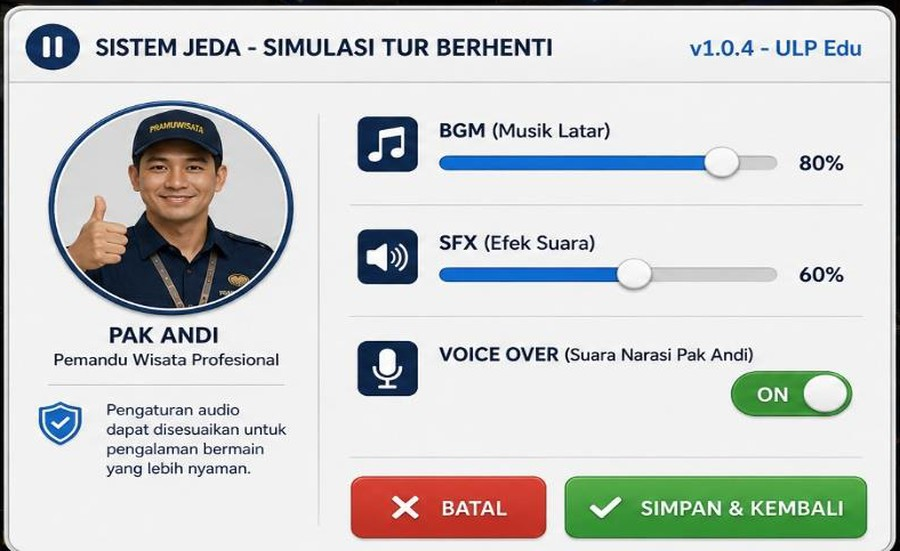
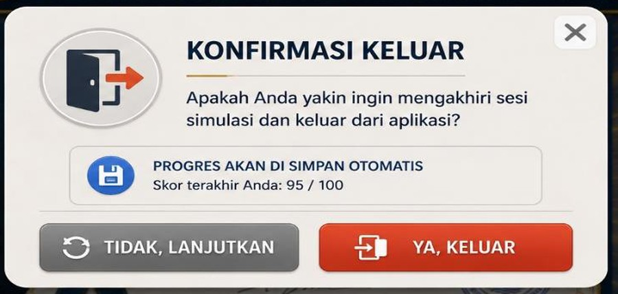

Mulai
Belajar materi K3 & grooming
Main gim arena pariwisata
Atur BGM, SFX & narasi
Keluar dari aplikasi
Ergonomi & Kelayakan Tour
Tanggap Darurat Wisata
Standar Grooming Pariwisata
Aspek Kesehatan — Ergonomi
Aspek Keselamatan — Kelistrikan
Kesehatan Lingkungan — Lux
Darurat Medis Tour
Evakuasi Kebakaran/Bencana
Sistem Pelaporan Insiden
🩹
📋
0 / 3 Terbaca
Mulai inspeksi diri
Level 1 — Audit Bus & Kubikel Agen
Level 2 — Tanggap Darurat Grup Turis
Level 3 — Grooming Pemandu Profesional
Panduan bermain
Petunjuk
⚙️
⏱️ WAKTU TERSISA
90s
🎯 SKOR
0 / 3
← KEMBALI
⚙️
⏱️ SISA WAKTU
15s
❤️ NYAWA
❤️❤️❤️
✔
✔
✔
← KEMBALI
⚙️
⏱️ SISA WAKTU
60s
★★★★★
TOTAL SKOR: 0
/ 100
STATUS: —
Unduh sertifikat (PNG)
Menu utama

80%
60%
Nyalakan/matikan narasi
Batal
Simpan & kembali

Lanjutkan bermain
Tutup aplikasi
✕